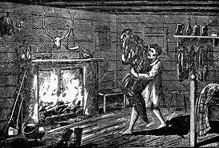
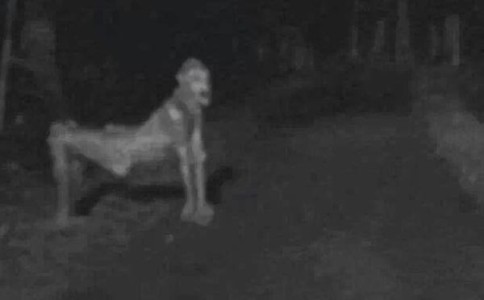
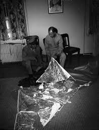

Haunting of the Bell Witch
One of America's most famous hauntings dates back to the early 1800s in Adams, Tennessee, where the Bell family reportedly suffered years of torment from a malicious and invisible entity. Known as the Bell Witch, the spirit was said to speak, slap, and even physically injure family members—especially the patriarch, John Bell. Legend holds that the witch was tied to a local woman named Kate Batts, who allegedly cursed the Bells before her death. Over time, the spirit’s torment intensified, leading to eerie voices, objects moving on their own, and ghostly laughter echoing through the night. Some accounts even claim the Bell Witch was responsible for John Bell’s death in 1820. The story gained national attention and was even investigated by future U.S. president Andrew Jackson, who is said to have fled the property after one night of supernatural phenomena. To this day, the Bell Witch legend persists, and the Bell Witch Cave, located on the original property, remains a popular paranormal hotspot for ghost hunters and skeptics alike.
Skinwalkers
Deep in the deserts and canyons of the American Southwest, particularly within Navajo Nation, a chilling legend persists—one that blurs the line between myth and nightmare. These are the Skinwalkers: powerful, malevolent witches said to possess the ability to shapeshift into animals, wear the skins of beasts, and walk unseen among humans. In Navajo lore, a Skinwalker—or yee naaldlooshii—is a person who has turned to the dark side of spiritual practice, committing unspeakable acts (often including the murder of a close relative) to gain supernatural power. Once transformed, they can assume the form of wolves, coyotes, owls, and other creatures of the night, using these disguises to stalk, deceive, and kill. Locals speak of glowing eyes in the dark, inhuman speed, and voices mimicking loved ones to lure victims into traps. Skinwalkers are said to be nearly impossible to kill, though Navajo tradition holds that knowing a Skinwalker’s true identity—and speaking their name—can rob them of their power. The legend gained mainstream attention through stories like those surrounding Skinwalker Ranch in Utah—an isolated property infamous for UFO sightings, poltergeist activity, mutilated cattle, and encounters with cryptid-like creatures. Government contractors, scientists, and journalists alike have investigated the area, but no definitive answers have emerged. Whether seen as literal shapeshifters, interdimensional beings, or metaphors for spiritual corruption, Skinwalkers remain one of the most terrifying and secretive tales in Native American folklore. Out of respect, many Navajo people avoid speaking of them altogether—believing that to do so may summon them.
The Roswell Incident
In July of 1947, something mysterious crashed on a ranch near Roswell, New Mexico. The U.S. military initially announced they had recovered a “flying disc,” only to retract the statement hours later, claiming it was merely a weather balloon. That abrupt reversal ignited what would become one of the most enduring alien conspiracy theories of all time. Witnesses described strange debris scattered across the desert—unlike anything they had seen before. Some claimed to see metallic fragments that defied explanation, while others reported unmarked military convoys sweeping in to seize everything and silence those involved. Decades later, in the late 1970s and ’80s, the story resurfaced with even more incredible claims. Former military personnel and civilians came forward alleging that not only a craft, but alien bodies had been recovered by the government—and that the incident had been covered up in a massive campaign of secrecy. The U.S. government has since offered several explanations, including the theory that the object was part of Project Mogul, a top-secret program using high-altitude balloons to detect Soviet nuclear tests. But for many UFO believers, this explanation doesn’t hold water. The Roswell Incident became the cornerstone of modern alien mythology, inspiring books, films, TV shows, and even an annual UFO Festival. More than just a mystery, it represents the public’s growing suspicion that the truth is out there—and being hidden. To this day, Roswell remains a symbol of extraterrestrial intrigue, government secrecy, and the endless human fascination with what lies beyond the stars.
